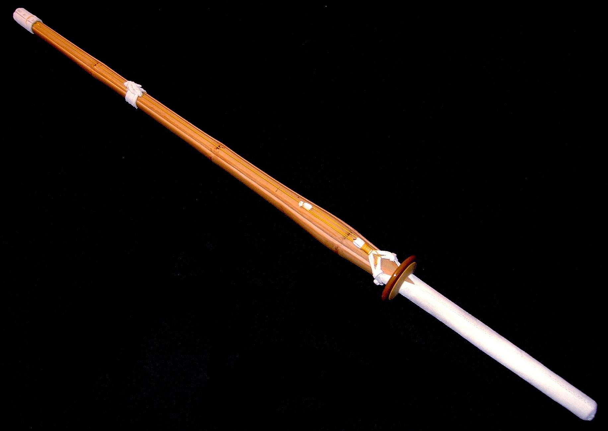

The Shinai
The modern shinai, with four slats of bamboo, is generally credited to Nakanishi Chuzo Tsugutate (died 1801) of Nakanishi-ha Ittō-ryū. The shinai was developed in an effort to reduce the number of practitioners being seriously injured during practice, making a practice weapon that was less dangerous than bokutō (木刀), the hard wooden swords they were previously using. This is also the motivation behind the development of bōgu (防具), the armour that protects the kendoka.
Sizes and style of shinai vary. For example, an adult may be able to use a shinai that is too heavy for a younger person, so shinai with different sizes and characteristics are made. Shinai are available in many styles and balances. A shinai should not be confused with a bokutō, which has a much more similar shape and length to a Japanese sword and is made from a single piece of wood. However, both shinai and bokken are used in kendo. The slats of a shinai are usually made from dried bamboo. Some may also be treated by smoking them, or soaking them in resin. Shinai slats are also made of carbon fibre, reinforced resin, or other approved alternative materials.
Information retreived via Wikipedia